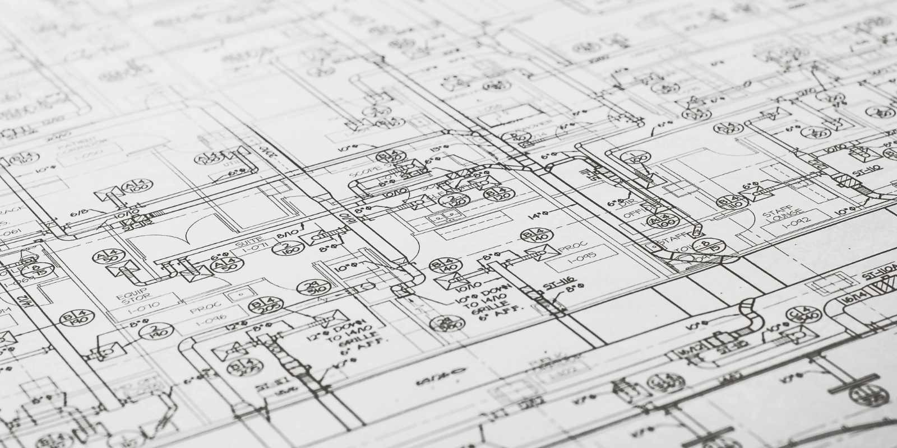

Снос, разборка, подготовка участка
Демонтаж зданий в Калининграде
Выполняем демонтаж зданий и сооружений, разборку конструкций, вывоз строительного мусора и подготовку площадки под новое строительство или благоустройство.
- Частичный и полный демонтаж
- Подготовка территории
- Комплексный подход
Какие демонтажные работы выполняем
Что влияет на стоимость демонтажа

Как проходит демонтаж
- Осмотр объекта и оценка объема работ.
- Согласование последовательности и техники безопасности.
- Демонтаж конструкций и сортировка отходов.
- Вывоз мусора и подготовка площадки под следующий этап.
FAQ по демонтажу
Да, можно заказать демонтаж с полной очисткой территории и подготовкой участка.
Да, выполняем частичный демонтаж отдельных конструкций и строений.
Да, это частый сценарий. После расчистки участка можем выполнить дренаж, мощение или подготовку под новое строительство.
Нужен демонтаж здания или подготовка участка
Опишите тип строения, площадь и желаемый результат. Подготовим расчет и порядок работ.
Контакты
Оставьте заявку на демонтаж, вывоз мусора или подготовку территории под новое строительство.
+7(921)618-23-77- Telegram: @CKcaizer
- Email: kaizer.sk@yandex.ru